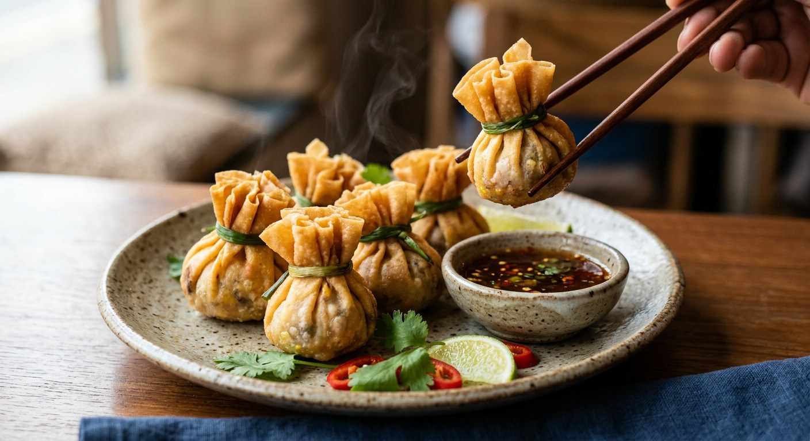

Stir-fried pork and shrimp with corn, peas and shiitake, pleated into a pastry money bag, tied with a blanched spring onion and fried golden — the snack Thailand serves to wish you wealth.

ถุงทอง means "golden bag" — the little parcel is deliberately shaped like the money pouch of old, and Wongnai's cooks describe the dish as a traditional Thai snack with an auspicious name: serve it and you wish the eater money and gold forever. Kapook places it at the โต๊ะจีน — the Chinese-style banquet table — and on buffet and upscale restaurant menus, an appetiser that arrives before the main event. TrueID's home cook simply calls it ถุงทอด, "the fried bag".
The build is constant across every source: a filling that is stir-fried first, then wrapped and only then fried. Kapook's classic mixes minced pork and shrimp with corn, peas, onion, carrot and soaked shiitake, bound with a little cornflour, seasoned with seasoning sauce and sugar, and cooked in the wok before it ever sees a wrapper. Aroifin adds the rule that matters most: fry the filling as dry as possible, because a wet filling steams the pastry from inside and the bag never crisps.
Then comes the folding — the part every source treats as the craft. Aroifin's tips: pleat the rim in one direction only, and tie the neck just tight enough to hold, not to strangle. The tie itself varies cook to cook — blanched spring onion in Kapook's classic, celery strips double-knotted in TrueID's home version, garlic chives in the vegetarian version, and in Kapook's party shortcut a strip of the pastry itself sealed with flour glue. The parcels fry over medium heat until golden, and TrueID drains them mouth-down so the oil trapped inside runs out before they hit the plate.
| Thai | English | Amount |
|---|---|---|
| รากผักชี | Coriander root | 1 root |
| กระเทียม | Garlic | 1 tbsp |
| พริกไทยป่น | Ground white pepper | ½ tsp |
| เนื้อหมูบด | Minced pork | 200 g |
| เนื้อกุ้งบด | Minced shrimp | 200 g |
| แป้งข้าวโพด | Cornflour | 2 tbsp |
| เมล็ดข้าวโพดต้มสุก | Cooked corn kernels | 100 g |
| เมล็ดถั่วลันเตา | Green peas | 100 g |
| หอมใหญ่หั่นเต๋า | Onion, diced | 1 head |
| แครอทหั่นเต๋า | Carrot, diced | 100 g |
| เห็ดหอมแช่น้ำสับหยาบ | Shiitake, soaked and roughly chopped | 100 g |
| ซอสปรุงรส | Seasoning sauce | 1 tbsp |
| น้ำตาลทราย | Sugar | 2 tbsp |
| เกลือป่น | Salt | a pinch |
| น้ำมันพืช | Vegetable oil (for stir-frying) | 2 tbsp |
| แผ่นแป้งปอเปี๊ยะ | Spring roll sheets (for wrapping) | as needed |
| ต้นหอมลวก | Blanched spring onions (for tying) | as needed |
| น้ำมันสำหรับทอด | Vegetable oil (for deep-frying) | as needed |
| น้ำจิ้มบ๊วย / น้ำจิ้มไก่ | Plum sauce or sweet chilli chicken sauce | to serve |
Aroifin's plum sauce (น้ำจิ้มถุงทอง): 200 g sugar, 1 teaspoon salt, 100 g vinegar, 20 g red chillies — dissolve over medium heat, stir in the pounded chillies, done. The party shortcut (Kapook, from Facebook page iCook): 200 g minced pork or chicken fried in 50 g salted butter with 20 g chopped sweet pickled radish, 1 teaspoon pork seasoning powder and 1 tablespoon sugar, then folded through a whole 500 g bag of frozen mixed vegetables. The small-batch version (Wongnai, Charmmy Orn): 90 g each minced pork and shrimp with 2 tablespoons each of chopped carrot and jicama, wrapped in double-stacked wonton wrappers, about a teaspoon per bag, with a from-scratch vinegar-fish-sauce dipping sauce (see the disagreements below).
The wrapper. Kapook, TrueID and Aroifin use spring roll sheets. Both Wongnai home cooks wrap in แผ่นเกี๊ยว, wonton wrappers — the vegetarian version's author is explicit that wonton wrappers stand in when the spring roll sheets run out, "even if the bags come out a little small".
The tie. Kapook's classic and Aroifin tie with blanched spring onion (Wongnai's Charmmy Orn boils hers with a little salt and oil first); TrueID double-knots thin celery strips; the vegetarian version uses blanched garlic chives shocked in cold water; and Kapook's party version ties with a strip cut from the pastry itself, sealed with flour glue.
The filling. Pork and shrimp together in Kapook's classic, Aroifin and Charmmy Orn; pork alone with jicama and shiitake in TrueID; butter-fried mince with sweet pickled radish and a bag of frozen mixed vegetables in Kapook's shortcut; mushroom-corn-egg in the vegetarian one. มันแกว, jicama, appears in TrueID and Charmmy Orn and nowhere else; corn and peas appear only in Kapook's classic and Aroifin.
The sauce. Kapook and TrueID reach for the bottle — น้ำจิ้มไก่, sweet chilli chicken sauce, or น้ำจิ้มบ๊วย, plum sauce. Aroifin makes its own plum sauce from vinegar, sugar, salt and chillies, and Charmmy Orn makes a third thing entirely: a reduced vinegar-and-fish-sauce dip with pounded jinda chillies and garlic.
The seasoning. Seasoning sauce and sugar in Kapook's classic and Aroifin; fish sauce and sugar in Charmmy Orn; seasoning soy sauce and salt in TrueID; a pork seasoning powder in Kapook's shortcut.
This recipe is translated from the following Thai-language sources. Where they disagree, we've said so.
1. Kapook — "ถุงทอง อาหารว่างน่ารัก ๆ กรอบอร่อย" (the recipe used here) — cooking.kapook.com
2. Aroifin — "วิธีทำ ถุงทอง เมนูของว่างไทย ทำง่าย ๆ อร่อยถูกปาก" (plum sauce, timings and folding tips) — aroifin.com
3. TrueID Food — "ถุงทอง ทำเองได้ง่าย ๆ" (the celery tie and the mouth-down drain) — food.trueid.net
4. Kapook — "ถุงทองทอด อาหารว่างชื่อมงคล เมนูหรูที่คุณก็ทำได้" by Facebook page iCook (the party shortcut) — cooking.kapook.com
5. Wongnai — "สูตร ถุงทอง" by Charmmy Orn (the homemade dipping sauce and wonton wrappers) — wongnai.com
6. Wongnai — "สูตร ถุงทอง (มังสวิรัต ไข่)" by สไตล์ของแม่ (the vegetarian-egg version) — wongnai.com